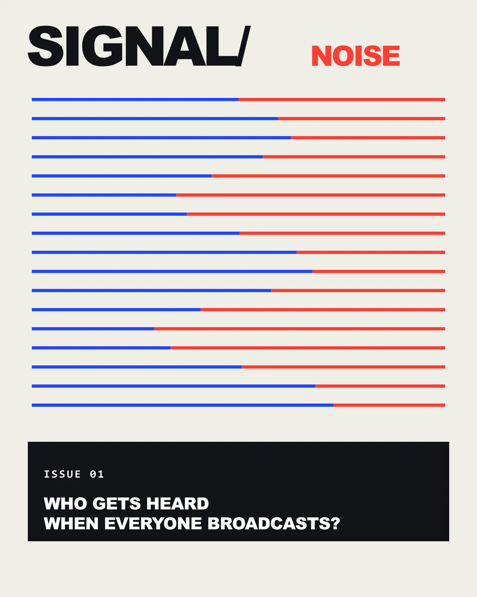
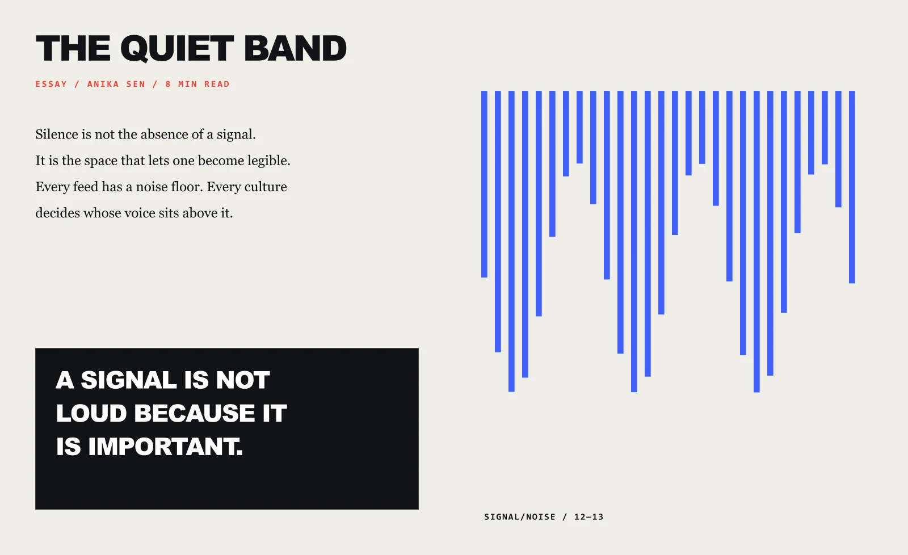
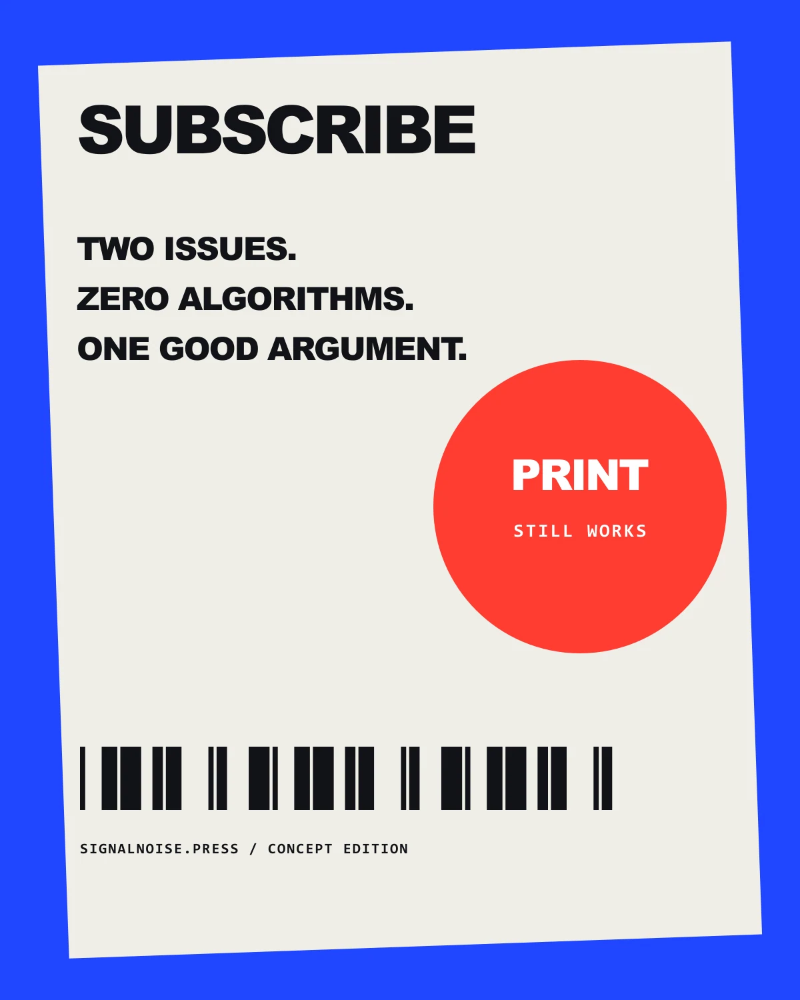
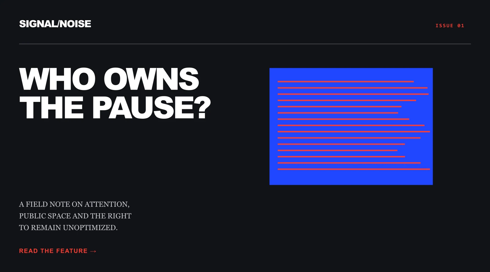

Typography
A heavy grotesk voice for propositions, a serif reading face for essays and mono for issue mechanics.
Self-initiated fictional publication / 2026
Editorial calm is interrupted by red-blue waveforms. Each issue asks one blunt question and lets the typography hold the argument.

A cover where opposing line systems create both image and editorial premise.

A long-form spread that uses quiet measure on one side and visual frequency on the other.

A subscription poster using deliberate print-language collisions rather than interface decoration.

A web-editorial key visual that preserves long-form reading cues inside a post-digital frame.
01 / Communication problem
Designers, writers and media readers who want dense ideas presented with pace and clarity.
Editorial calm is interrupted by red-blue waveforms. Each issue asks one blunt question and lets the typography hold the argument.
Typography
A heavy grotesk voice for propositions, a serif reading face for essays and mono for issue mechanics.
Colour
Newsprint cream, broadcast blue, alert red and soft black.
Composition
Rule-based columns meet controlled signal breaks, leaving large quiet fields around key ideas.
Image making
Authored waveforms, typographic diagrams, printed bars and digital feature blocks.
Mixture formula
Selected alternate / Rejected direction
An early cover stacked many article lines around the masthead. The question lost force, so the final cover treats one proposition as the visual event.
AI production disclosure
This project uses authored vector graphics and editorial copy. The magazine, contributors and issue details are fictional.
Freelance collaborations